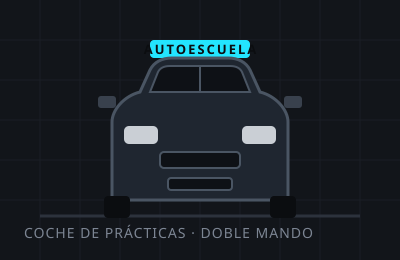
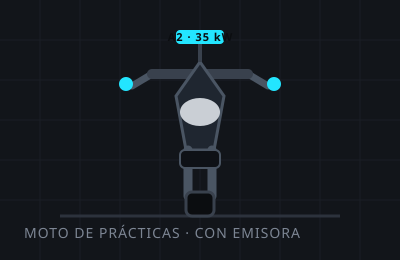
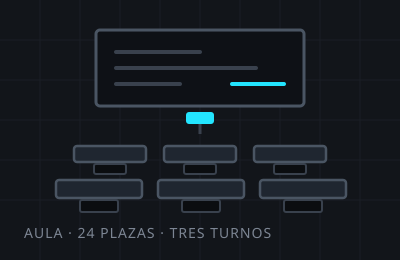

Autoescuela en Arteixo · A Coruña · desde 2011
Un carril, diez pasos y tu carné al final
Enseñamos a conducir, no a aprobar de milagro. Teórica con profesor en el aula, test corregidos uno a uno y prácticas con el mismo coche y el mismo profesor de principio a fin.
- Turnos de teórica
- mañana, tarde y noche
- Prácticas
- 55 minutos, de lunes a sábado
- Aula
- 24 plazas · Rúa da Pista 22
01 La ruta
De la matrícula al primer viaje solo
Seis tramos. Ninguno se salta y ninguno se alarga porque sí: cuando un alumno está listo para el siguiente, se lo decimos nosotros y lo decide él.
-
Tramo 01
Matrícula y papeles
Traes el DNI y una foto; nosotros hacemos el expediente, pedimos cita para el psicotécnico y te damos el acceso a los test el mismo día.
Dura una tarde
-
Tramo 02
Teórica en el aula
Doce sesiones de una hora con profesor delante, no un vídeo. Tres turnos al día para que encajen con el trabajo o con las clases.
De dos a cuatro semanas
-
Tramo 03
Test hasta que salgan
Test en casa desde el móvil y un repaso semanal en el aula donde se corrigen los fallos uno a uno. No mandamos a nadie al examen con más de dos fallos de media.
Repaso los miércoles
-
Tramo 04
Examen teórico
Te llevamos, te esperamos y te traemos. Si no sale a la primera, el siguiente intento se prepara con un plan de fallos, no repitiendo todo desde cero.
Fecha en 2 o 3 semanas
-
Tramo 05
Prácticas
Clases de 55 minutos, siempre con el mismo profesor y el mismo coche. Empezamos en polígono los primeros días y acabamos en autovía y aparcamientos de verdad.
Unas 20 clases de media
-
Tramo 06
Examen práctico y carné
La víspera se hace una clase de recorrido por la zona de examen. Después, el permiso provisional y una charla corta sobre los tres primeros meses conduciendo solo.
Y ya está
Tramo 01 · Matrícula y papeles
02 Permisos
Lo que se puede sacar aquí
Todo lo que ves está en la misma aula y con los mismos profesores. Los cursos de mercancías y viajeros los damos en colaboración con un centro de formación de A Coruña.
-
B
Coche
El de siempre: turismos de hasta 3.500 kg. Teórica común, prácticas con cambio manual o automático.
Desde los 18 años
-
A2
Moto media
Hasta 35 kW. Maniobras en circuito cerrado y circulación en vía abierta con emisora.
Desde los 18 años
-
A
Moto sin límite
Por examen o por antigüedad del A2 con el curso de formación. Te decimos cuál te toca sin venderte el más caro.
Desde los 20 años
-
AM
Ciclomotor
Para 45 km/h. Teórica específica, corta, y prácticas en circuito con casco y protecciones nuestras.
Desde los 15 años
-
B+E
Remolque
Para arrastrar remolque grande con el coche. Solo práctico, con maniobra de marcha atrás en «S».
Con el B en vigor
-
+6
Recuperación de puntos
Curso de recuperación parcial de puntos, en fin de semana. Plazas limitadas a doce personas por convocatoria.
Dos convocatorias al mes
03 Precios
Importes de muestra, inventados
Atención: esta página es una demostración. Todos los importes de esta sección, incluidas las tasas, son ficticios y no se corresponden con ninguna tarifa real ni con ninguna tasa oficial vigente. En una autoescuela real, la tasa de examen la fija la administración, se paga aparte y hay que publicar la cifra correcta del año en curso.
| Concepto | Qué incluye | Importe de muestra |
|---|---|---|
| Matrícula permiso B | Expediente, material y acceso a los test | 180 € |
| Teórica en aula | Doce sesiones y repasos hasta el examen | incluida |
| Clase práctica | 55 minutos, coche y profesor | 32 € |
| Bono de 10 clases | Diez clases de 55 minutos | 295 € |
| Clase de examen | Recorrido por la zona de examen la víspera | 45 € |
| Presentación a examen | Gestión, traslado y acompañamiento | 60 € |
| Tasa de examen ficticia | Importe inventado para la demostración | 90 € |
| Psicotécnico ficticio | Importe inventado para la demostración | 45 € |
04 Test
Tres preguntas de muestra
Preguntas escritas para esta demostración: no son preguntas oficiales ni están tomadas de ningún examen. Sirven para enseñar cómo funcionaría el test dentro de la web.
05 Aula y flota
Dónde se estudia y con qué se practica
Un aula de veinticuatro plazas en la planta baja, con pizarra, proyector y los mismos test que luego usas en el móvil. Y cuatro vehículos, todos con doble mando y revisados en el taller cada seis meses.
- plazas en el aula
- 24
- sesiones de teórica
- 12
- minutos por práctica
- 55
- años dando clase
- 15
-

Dos coches de prácticas
Uno manual y otro automático, los dos con doble mando, cámara de marcha atrás desactivada durante las clases y el mismo tipo de asiento que en el examen.
-

Una moto de A2
De 35 kW, con emisora para las clases en vía abierta. Casco, guantes y protecciones de la autoescuela incluidos mientras dure la formación.
-

El aula
Veinticuatro plazas, tres turnos al día y un profesor delante en cada sesión. Los repasos de test son los miércoles a las 19:00.
-
Marta Ledo
Directora y profesora de teórica
Da las doce sesiones del aula y lleva el repaso de los miércoles. Es quien decide si alguien está listo para el examen teórico.
-
Brais Sanmartín
Profesor de prácticas · coche
Quince años dando clase en la zona. Empieza en el polígono y acaba metiendo a todo el mundo en la autovía antes de la décima clase.
-
Noa Ínsua
Profesora de prácticas · moto y coche
Lleva el A2, el A y el AM, y las clases de recorrido de la víspera del examen. Su circuito de conos tiene fama de ser peor que el del examen.
06 Preguntas
Lo que se pregunta en el mostrador
¿Cuánto se tarda en sacarse el carné?
Depende de cada persona y de las fechas de examen, así que no damos plazos cerrados. Lo honesto es esto: la teórica suele llevar de dos a cuatro semanas y la media de prácticas de nuestros alumnos ronda las veinte clases. Quien te prometa una fecha exacta se la está inventando.
¿Los precios de esta web son los de verdad?
No: esta página es una demostración y todos los importes están inventados, incluidas las tasas. En una autoescuela real hay que publicar los precios vigentes y la tasa oficial del año en curso, indicando que se paga aparte.
¿Puedo dar clases con cambio automático?
Sí. Ten en cuenta que, si te examinas con automático, el permiso queda limitado a ese tipo de cambio hasta que hagas la prueba correspondiente. Te lo explicamos antes de decidir, no después.
¿Hay clases por la noche?
La teórica tiene turno de noche de lunes a jueves a las 20:00. Las prácticas llegan hasta las 21:00 de lunes a viernes y hasta las 13:00 los sábados.
¿Y si suspendo?
Se prepara la siguiente convocatoria con un plan hecho sobre los fallos concretos. En el práctico solemos empezar por las dos o tres maniobras que se torcieron, no por repetirlo todo.
¿Tenéis test en el móvil?
Sí, con el acceso que se da el día de la matrícula. Los fallos quedan marcados para repasarlos en el aula los miércoles.
07 Matrícula
Pásate por el aula
Sin cita: en horario de oficina siempre hay alguien en el mostrador. Si prefieres que te llamemos, déjanos el teléfono y te contamos el plan completo.
- Dirección
- Rúa da Pista 22, baixo
15142 Arteixo · A Coruña - Teléfono
- 981 00 00 00
Número de muestra: no funciona. - Correo
- info@carrildez.example
- Oficina
- Lunes a viernes 09:00 – 21:00
Sábado 10:00 – 13:00 - Turnos de teórica
- 10:00 · 17:00 · 20:00
Repaso de test: miércoles 19:00
El mapa no se carga hasta que lo pides: así esta página no pone cookies de terceros por su cuenta. La dirección es inventada; el mapa mostrará la zona aproximada.